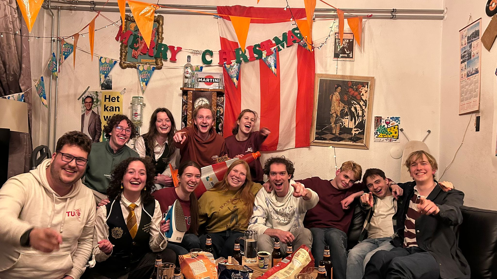

We zijn een gezellige studentenvereniging die zich richt op het creëren van een hechte gemeenschap onder studenten. Bij JV i.o. Demeter organiseren we regelmatig leuke evenementen, zoals feesten, sportactiviteiten, en culturele uitjes, om ervoor te zorgen dat onze leden een geweldige tijd hebben en nieuwe vrienden maken. Of je nu op zoek bent naar een plek om te ontspannen na een drukke dag studeren of gewoon wilt genieten van leuke activiteiten met gelijkgestemde mensen, bij ons ben je aan het juiste adres!